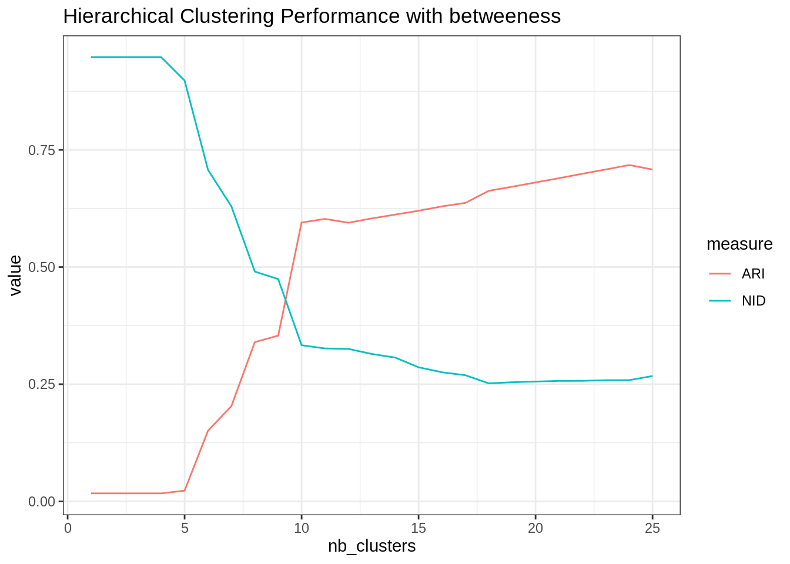
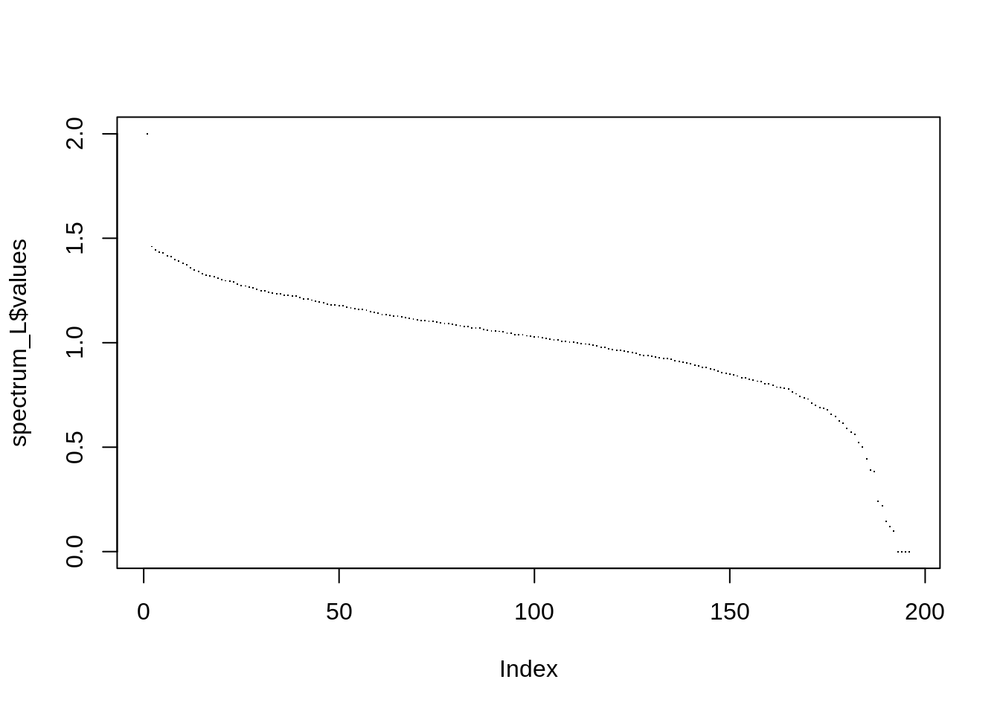
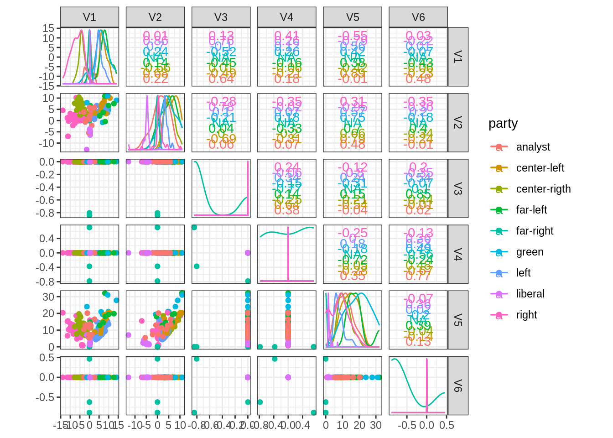
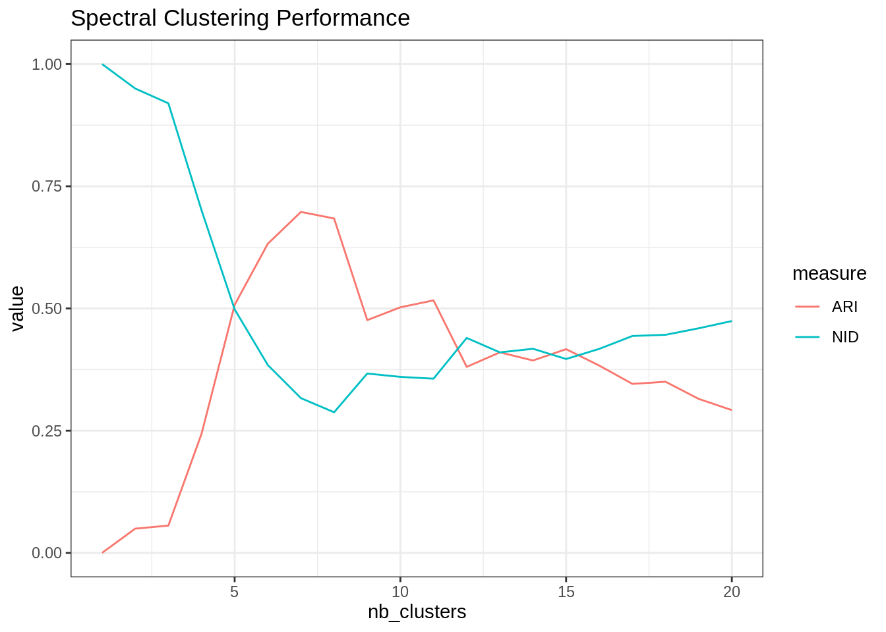
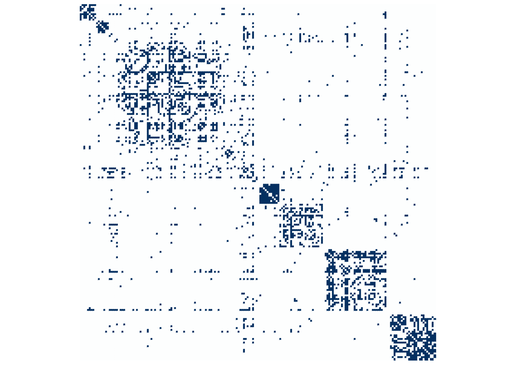

Homework #5: correction
Clustering of Network data
MAP 573
11/03/2020
Analysis of the French political Blogs in 2006
Package requirements
Check that the following packages are available on your computer:
library(tidyverse)
library(igraph)
library(missSBM)
library(aricode)
library(corrplot)
theme_set(theme_bw())Data sets
We first load the data set from the missSBM package
data('frenchblog2007')
frenchblog2007## IGRAPH 7b93b75 UN-- 196 1432 --
## + attr: name (v/c), party (v/c)
## + edges from 7b93b75 (vertex names):
## [1] jeunesverts.org/bordeaux-- bix.enix.org/
## [2] jeunesverts.org/bordeaux-- dominiquevoynet.net/blog
## [3] bix.enix.org/ -- www.arnaudcaron.net/
## [4] bix.enix.org/ -- dominiquevoynet.net/blog
## [5] bix.enix.org/ -- blogs.lesverts.fr/
## [6] bix.enix.org/ -- emilien.net/
## [7] bix.enix.org/ -- lipietz.net/blog.php3?id_breve=63
## [8] bix.enix.org/ -- democratiesansfrontiere.org/
## + ... omitted several edgesI start by ploting the degree distribution of the node, with good old R-graphics! Just to check that a few node are indeed highly connected (with a power law distribution). But it also seems that there is a large part of the node which have a decent number of neighbor (>=5), probably forming communities.
prob_degrees <- frenchblog2007 %>% degree_distribution %>% setNames(1:length(.))
degrees <- as.numeric(names(prob_degrees))
par(mfrow = c(1, 2))
barplot(prob_degrees, col = "cyan", las = 3)
## power law distribution for degrees higher than 10
keep <- setdiff(which(prob_degrees != 0), 1:9)
plot(log(degrees), log(prob_degrees), pch = 16)
lm(log(prob_degrees) ~ 1 + log(degrees), subset = keep) %>%
coefficients() %>% abline(col = "red", lwd = 2, lty = "dashed")
Indeed, when plotting the graph by adding labels associated with the party, one can exhibit interesting groups of node forming community largely composed by blogs from the same political orientation.
plot(frenchblog2007,
vertex.shape="none", vertex.label=V(frenchblog2007)$party,
vertex.label.color = "steel blue", vertex.label.font=1.5,
vertex.label.cex=.6, edge.color="gray70", edge.width = 1)
Graph Partitioning
We expect that clustering algorithms based on similarities between node - when similarity corresponds to a high level of connectivity - to find a clustering carrying a part of the information carried by the political party. Indeed, the above plots showed that nodes from the same political party tend to be more connected together than with node from other parties. Of course, this is only a part of the complex structure of the blog network.
Hierarchical clustering with modularity
Use this function to extract a possible clustering of the nodes for the French blogosphere. Use the plot function for object with class communities outputing from igraph::fastgreedy.community. Compare this clustering with the political labels of the nodes (use for instance confusion tables with table or adjusted Rand-Index with aricode::ARI).
community_cl <- fastgreedy.community(frenchblog2007)
plot(community_cl, frenchblog2007, vertex.shape="none",
vertex.label=V(frenchblog2007)$party, vertex.label.color = "steel blue",
vertex.label.font=1.5, vertex.label.cex=.6)
plot_dendrogram(community_cl)
The performances are not incredible…
nb_clusters <- 1:10
ARI <- map_dbl(nb_clusters, ~ARI(cut_at(community_cl,no = .), V(frenchblog2007)$party))
NID <- map_dbl(nb_clusters, ~NID(cut_at(community_cl,no = .), V(frenchblog2007)$party))
tibble(ARI = ARI, NID = NID, nb_clusters = nb_clusters) %>%
pivot_longer(-nb_clusters, values_to = "value", names_to = "measure") %>%
group_by(measure) %>%
ggplot() + aes(x = nb_clusters, y = value, color = measure) + geom_line() +
ggtitle("Hierarchical Clustering Performance with community measure of similarity")
Explore the results offered by other clustering methods for community detection (e.g. igraph::cluster_edge_betweenness), or the ones obtained by a simple hierarchical clustering on dissimilarity measured on the adjacency matrix. Compare the clustering to the “ground-truth”. Comment.
betweenness_cl <- cluster_edge_betweenness(frenchblog2007)
nb_clusters <- 1:25
ARI <- map_dbl(nb_clusters, ~ARI(cut_at(betweenness_cl,no = .), V(frenchblog2007)$party))
NID <- map_dbl(nb_clusters, ~NID(cut_at(betweenness_cl,no = .), V(frenchblog2007)$party))
tibble(ARI = ARI, NID = NID, nb_clusters = nb_clusters) %>%
pivot_longer(-nb_clusters, values_to = "value", names_to = "measure") %>%
group_by(measure) %>%
ggplot() + aes(x = nb_clusters, y = value, color = measure) + geom_line() +
ggtitle("Hierarchical Clustering Performance with betweeness")
The gain is significative, which proves that there is more than simple community based structure in this network.
plot(betweenness_cl, frenchblog2007, vertex.shape="none",
vertex.label=V(frenchblog2007)$party, vertex.label.color = "steel blue",
vertex.label.font=1.5, vertex.label.cex=.6)
Spectral Analysis
We first used the algorithm introduced by Ng, Jordan and Weiss (2002). Check the course/slides!
- Compute the graph Laplacian with the
igraph::graph.laplacianfunction.
L <- graph.laplacian(frenchblog2007, normalized = TRUE)- Compute its eigen values and represent the scree plot (eigen values by increasing order). Comment.
spectrum_L <- eigen(L)
plot(spectrum_L$values, pch =".")
sum(spectrum_L$values <= 1e-16)## [1] 4As expected, there are 4 zero eigen values (the number of connected components). Indeed, we saw on the graph plots 3 isolated nodes plus one large group of connected nodes.
- Compute its eigen vectors and represent the pairs plot between the first 10 eigen vectors with non-null eigen values. Add colors associated to the Political labels of the nodes. Comment.
10 is too much. Consider only the first 5, and we keep only one vector associated to a zero eigen value:
n <- ncol(spectrum_L$vectors)
cols <- (n-5):n
U <- spectrum_L$vectors[, cols]
U <- U / rowSums(U^2)
data.frame(U %>% as_tibble(), party = V(frenchblog2007)$party) %>%
GGally::ggscatmat(color = "party")## Registered S3 method overwritten by 'GGally':
## method from
## +.gg ggplot2
- Implement the Spectral clustering algorithm and apply it to the French Blogosphere for various numbers of clusters.
my_spectral <- function(igraph_obj, nb_clusters, normalized = TRUE, nstart = 50) {
L <- graph.laplacian(igraph_obj, normalized = normalized)
n <- ncol(L)
spectrum_L <- eigen(L)
cols <- (n-nb_clusters):(n)
U <- spectrum_L$vectors[, cols, drop = FALSE]
U <- U/rowSums(U^2)
clusters <- kmeans(U, centers = nb_clusters, nstart = nstart)$cl
as.factor(clusters)
}- Compare your clustering to the political labels and to the one obtained by hierarchical clustering. Comment, make plots changing node colors, etc.
nb_clusters <- 1:20
spectral_res <- map(nb_clusters, ~my_spectral(frenchblog2007, .))
ARI <- map_dbl(spectral_res, ~ARI(., as.factor(V(frenchblog2007)$party)))
NID <- map_dbl(spectral_res, ~NID(., as.factor(V(frenchblog2007)$party)))
tibble(ARI = ARI, NID = NID, nb_clusters = nb_clusters) %>%
pivot_longer(-nb_clusters, values_to = "value", names_to = "measure") %>%
group_by(measure) %>%
ggplot() + aes(x = nb_clusters, y = value, color = measure) + geom_line() +
ggtitle("Spectral Clustering Performance")
- Redo the analysis with the absolute spectral clustering of Rohe et al (2011).
my_abs_spectral <- function(igraph_obj, nb_clusters, normalized = TRUE, nstart = 50) {
L <- graph.laplacian(igraph_obj, normalized = normalized)
n <- ncol(L)
spectrum_L <- eigen(diag(n) - L)
abs_values <- order(abs(spectrum_L$values), decreasing = TRUE)
cols <- abs_values[1:nb_clusters]
U <- spectrum_L$vectors[, cols, drop = FALSE]
clusters <- kmeans(U, centers = nb_clusters, nstart = nstart)$cl
as.factor(clusters)
}nb_clusters <- 1:20
spectral_res <- map(nb_clusters, ~my_abs_spectral(frenchblog2007, .))
ARI <- map_dbl(spectral_res, ~ARI(., as.factor(V(frenchblog2007)$party)))
NID <- map_dbl(spectral_res, ~NID(., as.factor(V(frenchblog2007)$party)))
tibble(ARI = ARI, NID = NID, nb_clusters = nb_clusters) %>%
pivot_longer(-nb_clusters, values_to = "value", names_to = "measure") %>%
group_by(measure) %>%
ggplot() + aes(x = nb_clusters, y = value, color = measure) + geom_line() +
ggtitle("Absolute Spectral Clustering Performance")
Last but not the least, a matrix plot after reordering of rows/columns according to the absolute spectral clsutering found
A <- frenchblog2007 %>% as_adj(sparse = FALSE)
cl <- spectral_res[[which.max(ARI)]]
corrplot(A[order(cl), order(cl)], method = "color", tl.pos = "n", cl.pos = "n")